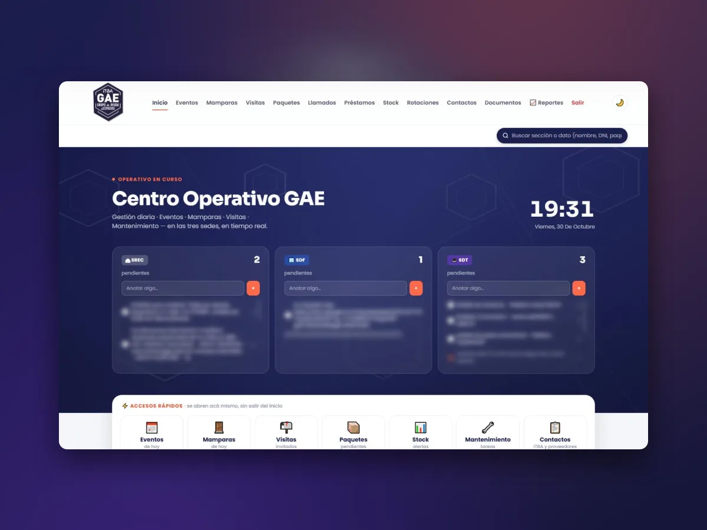
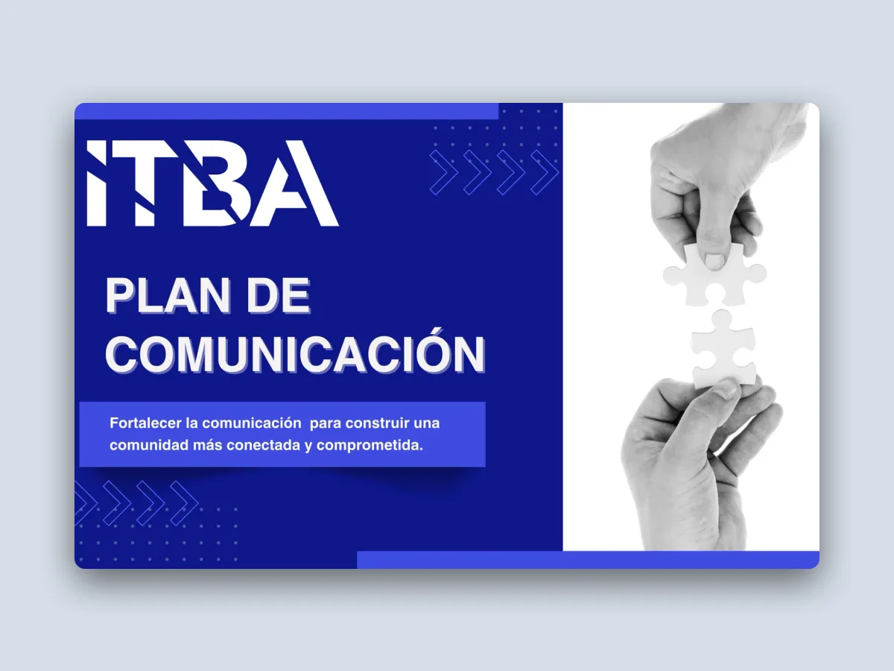
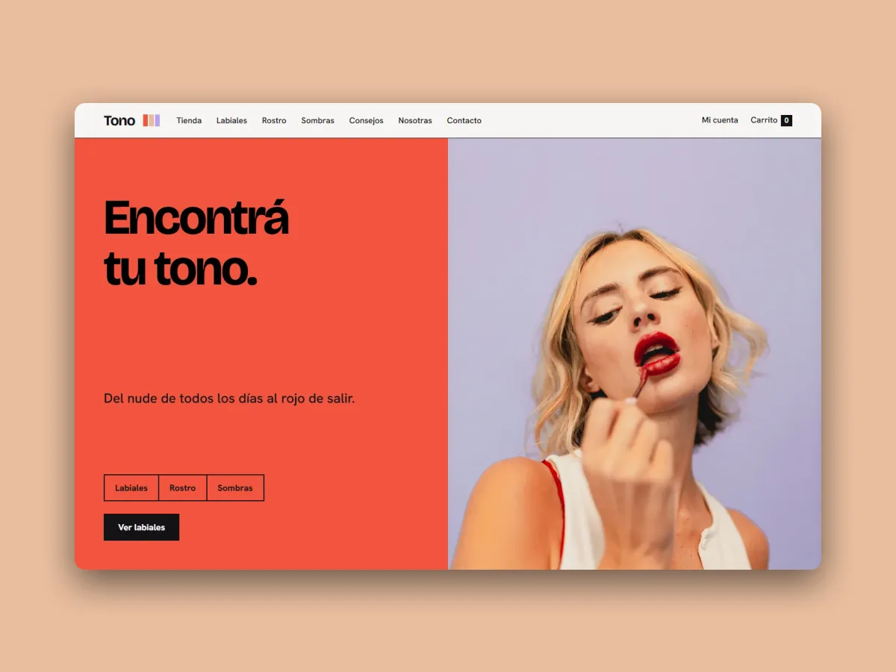
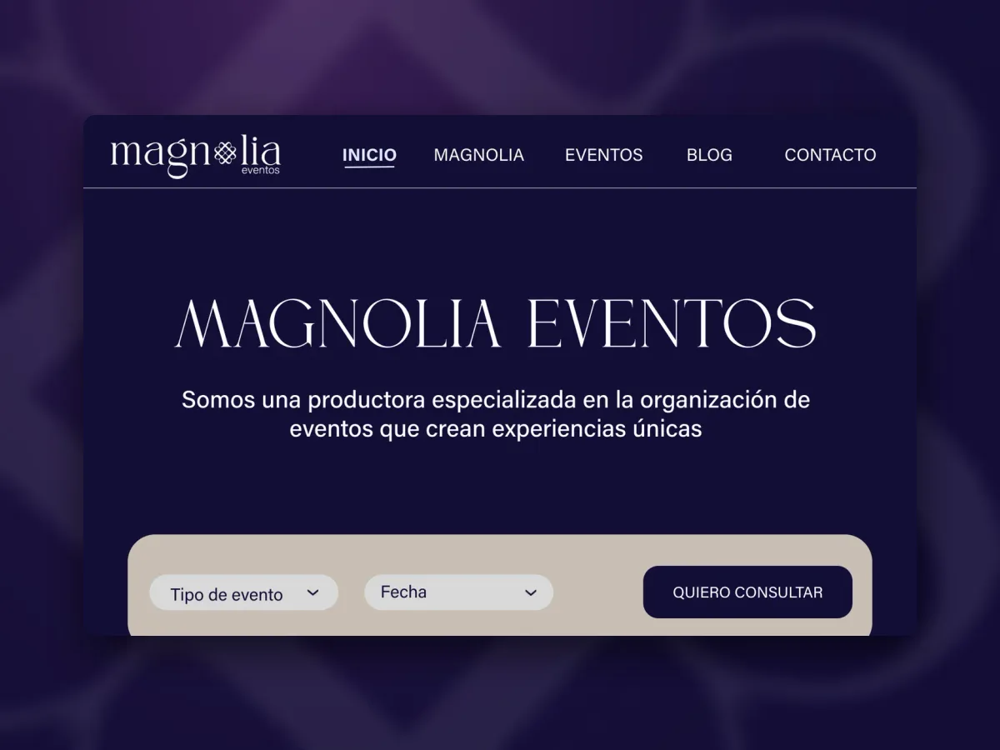
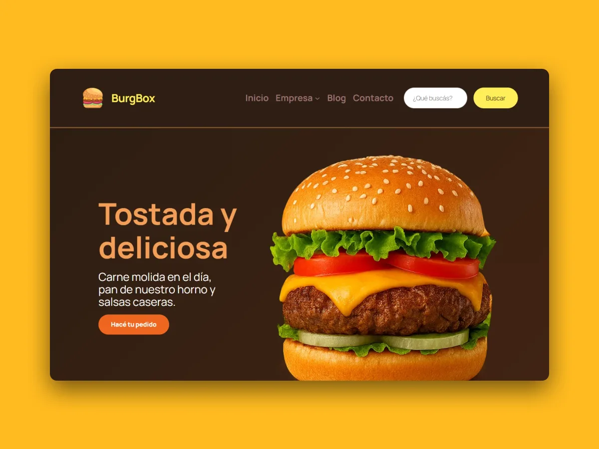
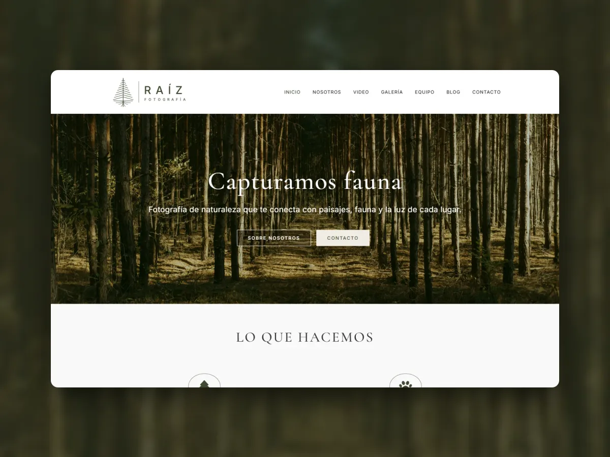
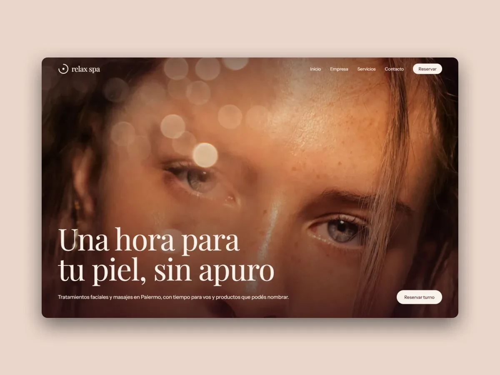
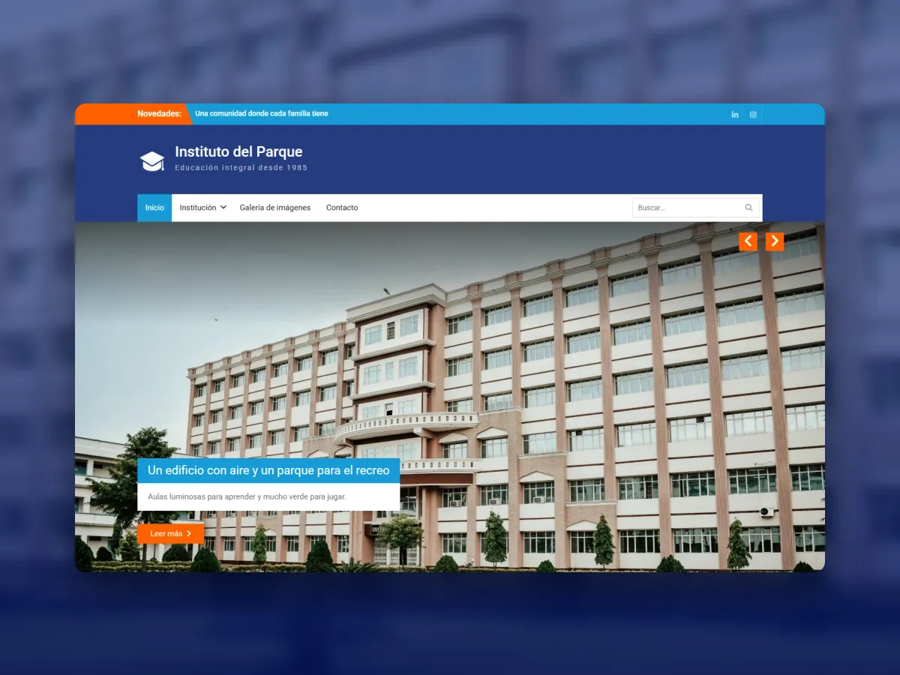
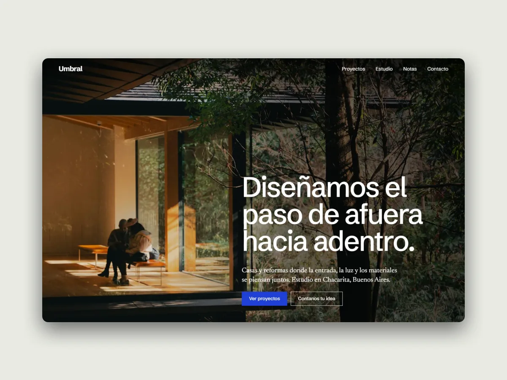

Transformo ideas en
experiencias digitales con identidad.
Comunicación digital · Marketing · Diseño y desarrollo web
Trabajos
-

UX · Plataforma web · ITBA Centro Operativo GAE De planillas de Excel a una sola herramienta para 3 sedes. Proyecto real · en uso -

Comunicación interna · Cartelería · ITBA Comunicación en el ITBA Carteles, reciclaje y señalización para tres sedes que se recorren de pasada. Proyecto real -

E-commerce · Identidad · WordPress Tono Tienda de maquillaje donde todo empieza por el color. Proyecto conceptual -

Plan de marketing · Web · App Magnolia Eventos Plan de marketing completo: del diagnóstico a la web y la app. Proyecto académico -

Diseño web · WordPress BurgBox Sitio para una hamburguesería de barrio. Proyecto conceptual -

Landing · Diseño web · WordPress Raíz Fotografía Sitio para una agencia de fotografía de naturaleza. Proyecto conceptual -

Diseño web · Identidad · WordPress Relax Spa Marca y sitio para un spa, contados desde la hora que te reserva. Proyecto conceptual -

Diseño web · Comunicación Instituto del Parque Sitio institucional para un colegio. Proyecto conceptual -

Diseño web · Código · WordPress Plantilla personalizada Un tema de WordPress que cada marca adapta desde el panel, sin tocar código. Proyecto conceptual
sobre mí
Soy técnica en Comunicación y Marketing Digital, y diseño y desarrollo sitios web.
Me formo en este mundo desde 2022. En la carrera trabajé redes, contenido y estrategia, y descubrí lo que más me apasiona: darle forma a todo eso en la web. Por eso lo sigo puliendo por mi cuenta, todo el tiempo.
Ayudo a marcas y equipos que necesitan comunicar con claridad y verse bien en lo digital.
En mi trabajo actual, en el GAE (Grupo de Ayuda a Espacios) del ITBA, el equipo manejaba todo en planillas de Excel sueltas. Diseñé y desarrollé, con asistencia de IA, una plataforma que hoy usan unas diez personas todos los días en tres sedes.
- Formación
- Técnica Superior en Comunicación y Marketing Digital (2025)
- Ciclo de Licenciatura en Comunicación, UADE (desde 2027)
- Formación constante en diseño y desarrollo web
qué hago
Resuelvo cómo se entiende una marca: qué dice, a quién le habla y cómo se ve en la web. Cuando todo habla con la misma voz, la marca se recuerda.
- Comunicación de marca Qué decir y con qué voz
- Marketing digital A quién hablarle y en qué canales
- Copywriting Frases que se entienden y hacen actuar
- Diseño web Sitios con identidad, fáciles de usar en cualquier pantalla
herramientas
Con lo que armo cada proyecto, de la idea a la publicación.
- Figma
- Canva
- WordPress
- Elementor
- WooCommerce
- HTML
- CSS
- Claude
- Office
- Doppler
- Looker Studio
- Google Drive
hablemos
Si tenés una idea que todavía no encontró su forma, me gustaría escucharla. Busco sumarme a un equipo de comunicación, marketing digital o diseño web, y también tomo proyectos freelance.